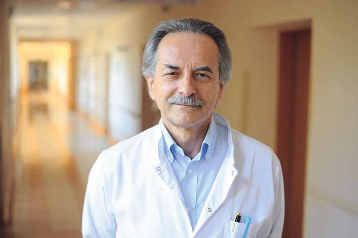
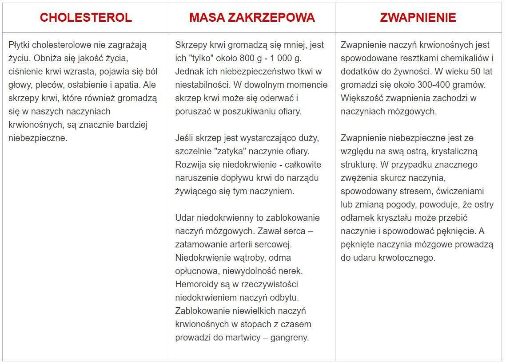
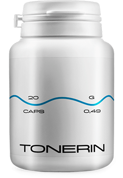
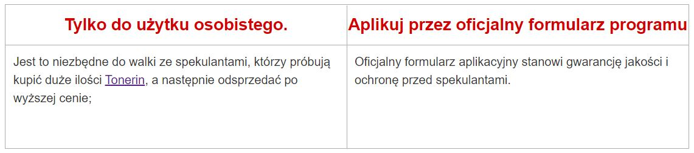

Nadciśnienie, zablokowanie naczyń krwionośnych i ból serca są przyczyną
przedwczesnej śmierci. Jak tego uniknąć?
Adam Kowalski
01.06.2022
Każdy wie, że udar i zawał serca to skutki zatykania żył przez cholesterol.
Niewiele osób sobie jednak zdaje sprawę, że to zaledwie czubek góry lodowej.
"Zatkane" naczynia są przyczyną 9 na 10 przewlekłych, praktycznie śmiertelnych
chorób.
Nadciśnienie tętnicze jest patologią, na którą cierpi co trzeci dorosły w Polsce,
a większość populacji nie jest świadoma problemu i dlatego nie podejmuje żadnych działań. I wielu z
tych, którzy są świadomi swojej patologii, myli się w terapii: przyjmują środki nieregularnie lub
wcale ich nie przyjmują, w zbyt niskich dawkach itp. Niestety wiele lat niewłaściwej kontroli ciśnienia
krwi może mieć szkodliwy wpływ na funkcjonowanie układu sercowo-naczyniowego i nerek, powodując liczne
komplikacje zagrażające zdrowiu i życiu.

Co powinni wiedzieć ludzie z nadciśnieniem tętniczym?
Dlaczego naczynia krwionośne odpowiadają za 85% naszego zdrowia?
Co poza cholesterolem zatyka naczynia krwionośne?
4 oczywiste i 7 innych ukrytych objawów złego stanu naczyń krwionośnych
Jak bezpiecznie oczyścić naczynia krwionośne w domu?
Na te pytania odpowiedział kierownik Kliniki krążenia płucnego, choroby
zakrzepowo-zatorowej i kardiologii Europejskiego Centrum Zdrowia w Warszawie. W latach 2004-2007 był
dyrektorem polskiego Towarzystwa Kardiologicznego. Wiceprezes Europejskiego Towarzystwa
Kardiologicznego, ekspert Paweł Fryc.
Adam Kowalski: Profesor, czy zawsze pan powtarza, że
naczynia krwionośne odpowiadają za 85% zdrowia organizmu? Dlaczego tak jest?
Jaki jest największy organ w ludzkim ciele? Niewiele osób wie. Moi studenci też
często się mylą. Najczęściej mówią, że mózg i wątroba. Najmądrzejsi twierdzą, że to
skóra. Tak naprawdę jednak największym organem jest nasz układ krwionośny. Naczynia krwionośne nie
są jedynie rureczkami, którymi płynie krew. Jest to złożony, unikalny narząd, którego
zniszczenie natychmiast kończy się cierpieniem.
Słabe krążenie w naczyniach nóg – żylaki, uporczywy
obrzęk i wieczna ciężkość nóg, uczucie zimna lub nieznośne pieczenie. Popękane pięty. Słabe
krążenie oznacza brak ochrony przed bakteriami, a tym samym przed grzybami. Paznokcie robią się grube i
długie.
Zatkane naczynia odżywiające wątrobę prowadzą do zapalenia
wątroby. Gorycz w ustach. Gorycz w ustach po zjedzeniu tłustych potraw.
Osłabione i zatkane naczynia krwionośne w stawach prowadzą do suchości
tkanki chrzęstnej. Stawy trzeszczą i bolą, rozwija się osteochondroza, pojawiają się
przepukliny.
Przy osłabieniu naczyń odbytu pojawiają się
hemoroidy.
Przy złych naczyniach krwionośnych oczu pogarsza się wzrok,
staje się zamglony, pojawia się efekt latających muszek. Rozwija się katarakta. Zaczerwienienie oczu,
które często uważamy za przejaw zmęczenia, ale w rzeczywistości jest to mikrokrwotok - pęknięcie
najmniejszych naczyń włosowatych oka. I rzecz jasna królowa chorób naczyń, Jego Wysokość
Nadciśnienie. A nadciśnienie jest matką udaru oraz siostrą zawału serca.
Do frazy "szczęście zależy od zdrowia" można dodać "a zdrowie
zależy od czystych naczyń"
Zatkane naczynia doprowadzają do tego, że wszystkie narządy głodują.
Na przykład nadwaga jest ściśle związana z naczyniami krwionośnymi.
Pokarmy pełne cholesterolu powodują głód narządów, a naczynia krwionośne nie są w stanie
dostarczyć im wystarczającej ilości składników odżywczych. Dlatego mózg wysyła sygnały o tym,
że trzeba coś zjeść. I człowiek je. Jednak nasze narządy nadal nie otrzymują odpowiedniej ilości
składników odżywczych z powodu zablokowania naczyń krwionośnych. A mózg ponownie wysyła nam
sygnał o jedzeniu. Proces ten powtarza się cały czas.
Stąd ciągła potrzeba jedzenia czegoś, pragnienie słodyczy i tłuszczu — ciało
potrzebuje kalorii.
Kiedy koledzy mówią ludziom: Ma Pan/Pani wysokie ciśnienie krwi z powodu nadwagi.
Nadciśnienie nie jest spowodowane nadwagą. Nadwaga jest spowodowana nadciśnieniem.
Dlatego zawsze powtarzam: jeśli pragniesz normalnego życia, oczyść i przywróć
zdrowie naczyniom krwionośnym. Czyste naczynia to klucz do pozbycia się 90% przewlekłych chorób, z
których niektóre uznawane są za “nieuleczalne”.
"Jeśli normalne światło naczynia ma grubość palca, to 5 kg płytek
cholesterolu zmniejsza światło do około 4 zapałek"
Adam Kowalski:Wszyscy wiedzą, że cholesterol
jest zły. To on zatyka nasze naczynia krwionośne, zwęża przepływ krwi i upośledza krążenie. Ale czy
on jest jedynym winowajcą?
Dokładnie. Płytki cholesterolu, znane również jako" płytki miażdżycowe",
są odpowiedzialne za około 60-70% niedrożności naczyń.
W wieku 50 lat, do 5 kg blaszek cholesterolu gromadzi się w ludzkich naczyniach.
Nagromadzenie cholesterolu zwęża przepływ w naczyniach 4-5 razy.
5 kg to całkowita masa nagromadzeń naczyniowych w wieku 50 lat
CHOLESTEROL
MASA ZAKRZEPOWA
ZWAPNIENIE
Płytki cholesterolowe nie zagrażają życiu. Obniża się jakość życia, ciśnienie
krwi wzrasta, pojawia się ból głowy, pleców, osłabienie i apatia. Ale skrzepy krwi,
które również gromadzą się w naszych naczyniach krwionośnych, są znacznie bardziej
niebezpieczne.
Skrzepy krwi gromadzą się mniej, jest ich "tylko" około 800 g - 1
000 g. Jednak ich niebezpieczeństwo tkwi w niestabilności. W dowolnym momencie skrzep krwi może
się oderwać i poruszać w poszukiwaniu ofiary. Jeśli skrzep jest wystarczająco duży,
szczelnie "zatyka" naczynie ofiary. Rozwija się niedokrwienie - całkowite naruszenie
dopływu krwi do narządu żywiącego się tym naczyniem. Udar niedokrwienny to zablokowanie
naczyń mózgowych. Zawał serca – zatamowanie arterii sercowej. Niedokrwienie wątroby, odma
opłucnowa, niewydolność nerek. Hemoroidy są w rzeczywistości niedokrwieniem naczyń odbytu.
Zablokowanie niewielkich naczyń krwionośnych w stopach z czasem prowadzi do martwicy –
gangreny.
Zwapnienie naczyń krwionośnych jest spowodowane resztkami chemikaliów i
dodatków do żywności. W wieku 50 lat gromadzi się około 300-400 gramów. Większość
zwapnienia zachodzi w naczyniach mózgowych.
Zwapnienie niebezpieczne jest ze
względu na swą ostrą, krystaliczną strukturę. W przypadku znacznego zwężenia skurcz naczynia,
spowodowany stresem, ćwiczeniami lub zmianą pogody, powoduje, że ostry odłamek kryształu może
przebić naczynie i spowodować pęknięcie. A pęknięte naczynia mózgowe prowadzą do udaru
krwotocznego.

4 oczywiste i 7 innych ukrytych objawów złego stanu naczyń
krwionośnych
Jeżeli skończyliście 45 lat i nigdy nie stosowaliście nutraceutyków, żeby oczyścić
naczynia krwionośne, zapewniam, że macie problem.
Naczynia krwionośne zatkane cholesterolem, skrzepy krwi, zwapnienia są naturalnymi
procesami starzenia. Oczywiście obecnie żywność, środki farmaceutyczne, palenie tytoniu i alkohol
przyspieszają proces "zatykania" 5-8 razy. Ale wszyscy jesteśmy ludźmi i nie ma sensu ukrywać,
że świat, w którym żyjemy, jest stworzony w ten sposób.
Jeśli zdiagnozowano u ciebie nadciśnienie, nawet nie musisz mnie słuchać. Wysokie
ciśnienie krwi jest królową problematycznych naczyń krwionośnych.
Czy cierpisz na skoki ciśnienia? Masz stale wysokie ciśnienie i musisz brać pigułki? To
znaczy, że w najlepszym przypadku naczynie zachowało 30% światła. Reszta jest gęsto pokryta płytkami
cholesterolu, skrzepami krwi i zwapnieniem.
Dlatego też najmniejszy stres, zmiana pogody, burza magnetyczna natychmiastowo odbijają
się na twoim samopoczuciu. Ciśnienie wzrasta, w głowie słychać szum, stawy
trzeszczą.
4 choroby wywoływane przez zatkane naczynia krwionośne:
1. Nadciśnienie
Niestabilne lub podwyższone ciśnienie krwi, które
trzeba obniżać za pomocą leków. Jest to główny i najważniejszy wskaźnik. Czy
zdiagnozowano u ciebie nadciśnienie? Więc naczynia krwionośne mówią Ci "potrzebujemy
czyszczenia!”
2. Żylaki
Brzydkie i opuchnięte żyły na nogach, uczucie ciężkości i
ból, obrzęk. Cholesterol i skrzepy krwi "zatykają" żyły. Stopniowo pojawiają się
pajączki, które z czasem przekształcają się w siateczkę żył. W ten sposób rozwijają
się żylaki. A teleangiektazje z kolei zamieniają się w żylaki.
3. Hemoroidy
W niedrożności naczyń odbytu węzły hemoroidalne puchną.
Jeśli naczynia krwionośne, przez które przepływa krew, są zatkane, powstaje szczelina
odbytu.
4. Osteochondroza
Jest to brak krążenia krwi w chrząstce. Chrząstka
wysycha i zaczyna się zużywać, nie mając czasu na regenerację. Nie regeneruje się i wysycha.
Traci zdolność do wsparcia. Sole nie są wypłukiwane i gromadzą się w niekontrolowany
sposób.
7 niepokojących objawów:
1. Obrzęk
Zatkane naczynia nie mają czasu na wydalanie płynów.
Zaburzają równowagę wodno-elektrolitową. Wieczorem nogi puchną, a na kostkach pozostają
ślady wąskich skarpet. Spuchnięta twarz i worki pod oczami. Nie możesz zdjąć pierścionków z
palców. Wzdęty brzuch wskazuje na obrzęk narządów wewnętrznych.
2. Szumy uszne
Mogą to być delikatne dźwięki lub donośne wycie,
które nie pozwala na niczym się skupić. Pojawiają się w wyniku podwyższonego ciśnienia w
naczyniach krwionośnych mózgu, które uciskają błonę bębenkową.
3. Zawrót głowy
Uczucie podobne do stanu upojenia alkoholowego,
nagłe ataki zawrotów głowy sugerują, że układ przedsionkowy głoduje. Często cierpi
również słuch
4. Bezsenność
Czy czujesz się senny i po pójściu spać nie możesz
zasnąć przez północy? Przyczyną jest brak dopływu krwi do przysadki mózgowej. W tym
przypadku chodzi o produkcję melatoniny – hormonu snu.
5. Zmęczenie
Bezsilność. Nie chcesz nic robić. Po prostu chcesz leżeć i
jeść. To uczucie bierze się z tego, że organizm przechodzi w tryb oszczędzania energii. Narządy
nie otrzymują wystarczającej ilości składników odżywczych przez zatkane naczynia, a ciało
próbuje obniżyć poziom aktywności, aby nie umrzeć.
6. Problemy ze wzrokiem
Uczucie latających muszek, niewyraźne widzenie.
Są to objawy niewydolności naczyniowej oczu
7. Ból stawów
Zmiany pogody powodują ból i chrupanie
stawów. Budzenie się rano nie sprawia, że czujesz się przebudzony i wypoczęty, ale
zdrętwiały i prawie sparaliżowany. Rozluźnienie stawów po spaniu zajmuje trochę czasu. Płyn
maziowy traci swoje właściwości, skleja stawy jak ciasto.
Najczęściej obserwuje się kilka objawów jednocześnie. Czy zauważasz u siebie przynajmniej jeden
z tych objawów? Naczynia rozpaczliwie biją na alarm, wymagając czyszczenia i odżywiania.
Wyczerpani próbują walczyć z każdą z patologii osobno. Biorą tabletki na nadciśnienie, stosują
maści na żylaki, czopki na hemoroidy, żele na osteochondrozę. I oczywiście wiele środków
przeciwbólowych.
Wydają pieniądze na karmienie firmy farmaceutycznej. Ponieważ przyczyna wszystkich patologii jest
taka sama - zaburzenia krążenia. Wówczas trzeba rozpocząć od oczyszczenia naczyń krwionośnych.
"Większość farmaceutyków nie pomaga ani nie przywraca, tylko
osłabia i szkodzi"
Adam Kowalski:Panie Pawle, jaki jest
najskuteczniejszy sposób na oczyszczenie naczyń krwionośnych z cholesterolu, skrzepów krwi
i zwapnień?
Do bezpiecznego czyszczenia naczyń mogę polecić prosty środek o nienagannej
reputacji o nazwie . Przedłuża on
życie o 12-17 lat, dodając
energii
i relaksu, i
nie kosztem cierpienia i utraty witalności
Bezpieczny niczym herbatka ziołowa. Pod względem skuteczności środek
ten zajmuje drugie miejsce po chirurgicznym oczyszczeniu naczyń krwionośnych - stentowaniu. W
przeciwieństwie jednak do operacji nie ma on powikłań ani efektów ubocznych. Środek pomaga oczyścić
wszystkie naczynia krwionośne w ciele. Od dużych tętnic po najmniejsze cienkie naczynia
włosowate.
jest w 100% naturalnym
produktem na bazie
ekstraktów
roślinnych,
który w kontakcie z wodą budzi żywe molekuły. Te małe "środki czyszczące" usuwają śluz
cholesterolu z naczyń krwionośnych, skrzepy krwi, które przylegają do ścian, zwapnienia -
pozostałości farmaceutyków. Wszystko, co zakłóca normalny przepływ krwi. W ciągu 1,5-2
miesięcy regularnego stosowania niszczy
wszystkie szkodliwe związki
gromadzące
się przez lata i
zatruwające twoje życie.
Bóle głowy rozpuszczają się razem z nimi, szum w uszach znika. Mózg zaczyna
otrzymywać składniki odżywcze i działać z prędkością superkomputera. Myśli są jasne i
precyzyjne.
Słuch się poprawia, możesz usłyszeć przyjemne dźwięki, których
wcześniej nie zauważałeś. Poprawa słuchu jest tak duża, że można nawet usłyszeć cichą rozmowę w
sąsiednim pokoju.
Zapachy stają się bardziej intensywne. Zatkany nos, katar i alergie
znikają. Oskrzela zostają przywrócone. Oddech jest wolny i regularny. Świeże powietrze wypełnia
płuca, rozchodzi się po organizmie przyjemnymi falami, wywołując uczucie lekkiej
euforii.
Smak staje się jaśniejszy i bogatszy. Zwykłe potrawy wywołują
niezwykle przyjemne doznania smakowe. Jesz mniej, a uczucie sytości pojawia się szybciej. Ciągłe
łaknienie słodyczy i tłuszczów znika.
Stawy "dziękują", już nie bolą. Chrupnięcie stawów
całkowicie zanika, ruchy stają się płynne dzięki przywróconemu nawilżeniu stawów. To jak
zmiana oleju w samochodzie, wymieniasz czarny płyn z kawałkami metalu na świeży, czysty olej, który
zapewnia idealny poślizg.
Adam Kowalski:To imponujące. Prawdę mówiąc,
po raz pierwszy słyszę o . Choć ogólnie
słyszałem o
nutraceutykach. W
Japonii i Izraelu,
prawnie ustanowiono u nich status nutraceutyków jako preferowanej terapii. A w Polsce produktom
tym wciąż się nie ufa. Dlaczego?
Pozwólcie, że opowiem jedną pouczającą historię o braku zaufania. W 1928 r.
odkryto pierwszy antybiotyk – penicylinę. Z łatwością leczył dyzenterię i tyfus,
na który wówczas ludzie nieuniknienie umierali.
Większość ludzi jednak nie wierzyła, że to może pomóc, ponieważ już się
rozczarowali próbując się wyleczyć. Ci, którzy byli rozczarowani 1000 razy i nie bali się
spróbować 1001, odzyskali siły. A ci, którzy poddali się, wzruszając ramionami i mówiąc:
"kolejny cudowny produkt, który nie pomaga", ponieśli porażkę, mimo że ratunek był w
pobliżu.
Podobnie jak penicylina pokonała kiedyś ówczesne choroby: czerwonkę, dur brzuszny
i dżumę płucną. Z czasem, wyeliminuje
patologie
naczyniowe.
Pierwsze kroki już
podjęto - Japonia, Kanada, Korea, Szwajcaria i Izrael – legislacyjnie postawiły na oczyszczanie naczyń
nutraceutykami zamiast terapii lekowej.
"Nasze wątpliwości nas wrobiają, sprawiają, że tracimy wiele okazji z
powodu strachu przed wypróbowaniem.”
W Polsce oficjalnie
przepisywany jest tylko w jednym
miejscu – w
głównym
szpitalu w kraju. Tam, gdzie oferują pomoc osobom z polityki i showbiznesu oraz innym elitom. Izraelskie
protokoły leczenia zostały tam przyjęte, a Rozporządzenia naszego ministerstwa zdrowia ich nie dotyczą.
W ten sposób ludzie mogą zobaczyć wyniki, a nie tylko niekończący się proces.
Reszta naszych obywateli oferuje zakup syntetycznych produktów wytwarzanych przez
duże firmy farmaceutyczne należące do tej samej elity.
2 miesiące przyjmowania to
to samo, co odrodzenie.
Adam Kowalski:Uważam też, że wątpliwości są
naszym największym wrogiem, więc nie boję się próbować nowych rzeczy. Wyobraźmy sobie, że
wziąłem opakowanie i otworzyłem je. Co się
dzieje dalej? Jak działa
ten
środek?
Dzięki płynowi i tlenowi przydatne ekstrakty nabierają efektu nadtlenku wodoru, są
nasycone tlenem.
Cząsteczki są zasadniczo małymi
bombami tlenowymi.
Wysadzają
złogi cholesterolu
w naczyniach i umożliwiają swobodny przepływ krwi.
został okrzyknięty
"czyścicielem naczyń". To
bardzo
dokładnie
odzwierciedla jego esencję.
Właśnie dlatego jest tak
skuteczny: bierzesz żywe
ekstrakty,
które
aktywnie działają. Tymczasem środki z apteki dają tylko pasywne i sterylizowane formuły
"szkieletowe".
Skład а zapewnia natychmiastowe
wchłanianie żywych
cząsteczek.
Ekstrakty
wzbogacone w tlen łatwo wchłaniają się w ściankach przełyku. Dlatego nie
powoduje
zgagi, goryczy
w jamie ustnej, odbijania, nie podrażnia jelit i chroni żołądek. Nawet osoby z wrzodami mogą bezpiecznie
przyjmować .
" to skarbnica
rzadkich ekstraktów,
które harmonijnie
oczyszczają i wzmacniają naczynia krwionośne"

UWALNIA "PRZEJŚCIA"
Ekstrakt z liści oliwnych – normalizuje poziom cholesterolu we krwi, zapobiega
rozwojowi miażdżycy. Pomaga zapobiegać tworzeniu się blaszek miażdżycowych w tętnicach i zmniejsza
ryzyko zawału serca i udaru mózgu. Cząsteczki substancji, jak
dłuto, rozbijają cząsteczki cholesterolu przymocowane do ścian naczyń krwionośnych. Zapewniając swobodny
przepływ krwi. Narządy w końcu zaczynają otrzymywać składniki odżywcze. Chrząstka powraca się, nasycona
wilgocią i tlenem, aktywuje mechanizm samoleczenia. Elastyczność zostaje przywrócona. Chrupnięcie
szyi, pleców i stawów znika. Kolana i palce nie reagują na zmiany pogody.
Obrzęk ustępuje. Stopy nie puchną nawet po całym dniu spędzonym na nogach. Dopływ krwi
do skóry zostaje przywrócony - gwiazdki i teleangiektazje znikają. Żylaki stopniowo się
zmniejszają, węzły hemoroidalne zostają przywrócone.
PRZEKSZTAŁCA W ENERGIĘ
Chrom – pomaga utrzymać poziom cukru we krwi w granicach normy, a także zapewnia zdrowy
skład tkanek ciała. Wychwytują cząsteczki cholesterolu i łączą
się z nimi, przekształcając je w korzystne lipoproteiny o wysokiej gęstości, rozkładające
tłuszcze.
zabija dwa ptaki jednym
kamieniem - usuwa cholesterol,
który zatyka
naczynia krwionośne i stymuluje prawidłowe spalanie tłuszczu. Dzięki temu odczuwasz przypływ siły,
czujesz chęć poruszania się, ożywają oczy, masz ochotę "skręcić
góry".
REDUKUJE SKURCZE
Ekstrakt z Gymnema Sylvester – obniża ciśnienie krwi, łagodzi rozdrażnienie i
zmęczenie, chroni przed arytmiami. Jest jak "waleriana"
dla naczyń krwionośnych. Uspokaja i rozluźnia zablokowane przez zaburzenia przepływu krwi naczynia
krwionośne. Ciśnienie stopniowo i bezpiecznie wraca do normy. Ból głowy i szum w uszach ustępuje,
płuca i oskrzela działają normalnie.
POMAGA SERCU
Witamina C – poprawia wytrzymałość naczyń krwionośnych, normalizuje metabolizm
cholesterolu, korzystnie wpływa na układ hormonalny i nerwowy.
Serce wzdycha z ulgą, jakby zdjęli z niego worek cementu. Tętno zwalnia i staje się
regularne. Arytmia i częstoskurcz już nie są problemem. Ostre mrowienie w klatce piersiowej spowodowane
zatorowością serca nie powtarza się i jest zapomniane na zawsze. Ryzyko zawału serca spada do
zera.
EFEKT MOTYLA
jest niczym machnięcie skrzydeł
motyla, które
wywołuje
reakcję łańcuchową
naszpikowaną niesamowitymi zdarzeniami. Począwszy od czyszczenia naczyń z nagromadzonych przez
dziesięciolecia zanieczyszczeń, krok po kroku
uruchamia reakcję
łańcuchową,
która oczyszcza
całe ciało.
ŁATWE PRZEBUDZENIE
Budzisz się rano i łatwo wyskakujesz z łóżka - nie musisz zmuszać się do
wstawania, rozciągania i masowania sztywnych nóg, rozciągając plecy i szyję.
Rano ciało jest wypełnione energią i siłą, ponieważ naczynia są całkowicie oczyszczone,
a w nocy wszystkie narządy otrzymują wystarczającą ilość składników odżywczych i odpoczynku. Żadna
część ciała nie została pozbawiona dopływu krwi i ma wystarczającą siłę na nowy
dzień.
PYSZNE ŚNIADANIE
Na śniadanie jesz kanapkę z grubą warstwą masła i chrupiącym boczkiem, a wątroba i
żołądek ją trawią. Nie czujesz gorzkiego smaku w ustach ani ostrego bólu w żołądku.
oczyścił naczynia, które przenoszą składniki odżywcze do żołądka, więc teraz strawi nawet
paznokcie.
PEŁNY SIŁY
Gdy wychodzisz z domu, nie musisz martwić się o swoje stopy – dadzą sobie radę, nawet
jeśli będziesz chodzić przez cały dzień, nie zmęczą się i nie spuchną. Sandały,buty, skarpetki nie
pozostawiają już śladów.
ABSOLUTNY SPOKÓJ
Jesteś absolutnie spokojny i zrelaksowany. Nie ma już ciągłego bólu, który
pożera twoje sumienie, nie pozwalając ci skupić się na czymkolwiek innym. Kiedy nic nie boli, zwykłe
rzeczy, dźwięki, zapachy znów są przyjemne.
JASNE MYŚLI
Nawet po ciężkim dniu pracy wracasz do domu i masz jasny umysł. Mózg pracuje jak
zegarek szwajcarski, wcale nie czujesz się zmęczony.
KOMFORTOWY SEN
A teraz, leżąc w łóżku, szybko i przyjemnie zapadasz w sen. Dawno minęły czasy,
kiedy przez pół nocy kręciłeś się w łóżku, od czasu do czasu przewracając poduszkę, ale sen
nie nadchodził. Teraz to proste - Ty decydujesz, kiedy chcesz zasnąć, a ciało natychmiast
reaguje.
"To niesamowity i naturalny sposób radzenia sobie z różnymi
patologiami, który pomaga poprawić codzienne funkcjonowanie organizmu. I powinieneś znaleźć
najlepszy sposób, aby dodać go do swojego życia”.
Deficyt i program preferencyjny
Adam Kowalski:O ile nam wiadomo,
zniknął
z większości aptek? Dlaczego?
Niestety tak. nie jest już dostępny w
aptekach od początku tego roku.
Przyczyną konfliktu była chciwość prywatnych sieci aptek, które żądały od producenta
480
euro za każde sprzedane opakowanie! Ustalając wysokie marże na cenę producenta (Cena
w
niektórych aptekach w Warszawie osiągnęła kilka tysięcy złotych), farmaceuci chcieli nałożyć na
producenta dodatkowe koszty.
Przedstawiciele aptek usprawiedliwiają - twierdzą, że taka dodatkowa opłata pozwala im przetrwać. W
końcu jest środkiem, który należy kupować co
7-10 lat. Ponadto po
oczyszczeniu naczyń
krwionośnych tymi kapsułkami osoba nie potrzebuje już środków z apteki, z których
korzystała wcześniej! Ludzie przestają obniżać ciśnienie krwi i nie kupują środków
przeciwbólowych. Znacząco spada zapotrzebowanie na leki na astmę i cukrzycę. A to pociąga za
sobą najbardziej nieprzewidywalne konsekwencje. Dlatego wymagana jest wysoka Cena .
W końcu producent przestał kontaktować się ze
wszystkimi aptekami i
zaczął
dystrybuować go
wyłącznie w Internecie. Zasadniczo tak jest prawidłowo. Oceńcie sami: nie musicie płacić za wynajem
punktów sprzedaży, nie musicie już płacić łapówek w aptekach. Więc teraz
jest
częścią oferty specjalnej.
Nasz Instytut wraz z Centrum Badań chirurgii sercowo-naczyniowej i producentem
uruchomił
program rabatowy w ramach projektu telemedycyny (Medycyny Internetowej).
Każdy może zamówić w cenie specjalnej.
Adam Kowalski:Co należy zrobić, aby wziąć udział
w tym programie?
Aby uzyskać należy spełnić
następujące
warunki:
Warunki otrzymania
Tylko do użytku osobistego.
Aplikuj przez oficjalny formularz programu
Jest to niezbędne do walki ze spekulantami, którzy próbują kupić
duże ilości , a następnie odsprzedać po
wyższej cenie;
Oficjalny formularz aplikacyjny stanowi gwarancję jakości i ochronę przed
spekulantami.

Adam Kowalski:Jak długo potrwa program
preferencyjny?
Do 06.06.2022 włącznie lub do
wyczerpania zapasów . A wszystko to pomimo
braku reklam w radiu i
telewizji. Ludzie
przekazują informacje, polecają rodzinie i przyjaciołom. Nawet dla nas niespodzianką było, że
informacje o produkcie zaczęły tak szybko się rozchodzić.
Dlatego zalecam złożyć zamówienie jak najszybciej.
Taka
propozycja nie
powtórzy się w tym roku.
DYSKUSJA I PYTANIA:
Dorota
W zeszłym miesiącu zamówiłam ten produkt dla siebie. Zdarzało
się, że moje ciśnienie krwi było zbyt wysokie, a tętno było nieco nieregularne. Po zażyciu
tego produktu przez 3-4 tygodnie ciśnienie krwi wróciło do normy. Teraz czuję się
znacznie lepiej. Dziękuję!
Justyna Mnich
Dostałam paczkę z , działa tak, jak
mówią! Prawie każdej
nocy bolała mnie głowa, czułam się bardzo źle, środki przeciwbólowe nie pomagały.
Później dowiedziałam się, że boli mnie głowa z powodu wysokiego ciśnienia krwi. Ale nie
o to chodzi. Przyjaciółka doradziła mi , zamówiłam go
w
ramach programu
preferencyjnego i byłam bardzo zadowolona. W 2 miesiące stałam się inną osobą! Zdałam sobie
sprawę, że dopóki nie wyczyściłam naczyń, tak naprawdę nie żyłam! Głowa nie boli,
żylaki zniknęły, a przede wszystkim schudłam 24 kg! Od 101 kg do 77! Oto co znaczy
normalizacja krążenia! Gorąco polecam jako środek
zapobiegawczy!
Danuta Szymańska
Ludzie, life hack: jeśli region nie bierze udziału w programie, być
może macie krewnych lub znajomych w regionie, gdzie program obowiązuje? Możecie poprosić ich
o zamówienie. Jeśli rzecz jasna nie postanowią zostawić
dla
siebie:)), według
warunków programu zamówić można tylko jedno opakowanie na osobę.
Michał Gryc
Przeszedłem terapię przez 3 miesiące i zapłaciłem prawie 1500
złotych. W zeszłym roku, kiedy
jeszcze był w aptekach. I chcę
powiedzieć, że tego
nie żałuję! Chociaż było to drogie, tylko w ciągu ostatniego roku udało mi się zaoszczędzić
prawie taką samą kwotę, ponieważ nie musiałem już kupować leków aptecznych. A życie
stało się o wiele łatwiejsze, kosztuje wszystkie pieniądze! W wieku 51 lat czułem się
jak dziadek. Starałem się nie odchodzić zbyt daleko od tonometru i zawsze trzymać w pobliżu
tabletki ciśnieniowe, nawet nie marzyłem o życiu do emerytury, głowa pękała, często
myślałem, że lepiej umrzeć... Mówiąc o ciśnieniu, zapomniałem o tym po 2 miesiącach,
czuję się jak młody i zdrowy mężczyzna (jeśli wiecie, co mam na myśli)! Więc nawet jeśli
Twój region nie ma programu preferencyjnego, to zamów bez bonusów, za każde
pieniądze – nie pożałujesz! Wydaje mi się, że wkrótce
zostanie
zakazany w
Polsce, ponieważ zatruwa życie wielu firm i pozbawia je zysków.
Marta Auguścińska
jest
najlepszym środkiem. Pewnego
dnia
poszłam do
specjalisty, który doradził mi, aby wypróbować ten nowy środek
(młody
specjalista prawdopodobnie nadal uważał, że środki powinny pomagać ludziom, a nie pomagać w
zarabianiu pieniędzy!). W moim przypadku zadziałał po
pierwszej dawce
- ciśnienie
spadło, ale kontynuowałam cykl zgodnie z zaleceniami specjalisty. Po 3 tygodniach
zapomniałam, czym jest nadciśnienie. Żylaki, które dręczyły mnie przez 10 lat,
zniknęły! Ja też miałam delikatny kobiecy problem i on też zniknął. Czuję się cudownie, jak
za młodu!
Grażyna Błachut
Dziękuję! Udało mi się zamówić opakowanie. Spróbuję.
Paweł
A w Gdańsku też to mają, czy ktoś wie?
Witold Gołąbek(moderator)
Nie, w Gdańsku program preferencyjny jest planowany później,
jeśli nic się nie zmieni, 16800 opakowań zostanie wysłanych do
miast
i
regionów.
Miroswał Kań
Co to jest 16800 opakowań? To kropla w morzu...
Paweł Piastowski
Co to za ludzie!!! Nikt ci nic nie jest winien! Gdy ja sobie
uświadomiłam, że potrzebuję nie
czekałam na darmochę!
Pożyczyłam
pieniądze i
kupiłam! Zniżki czekają! Wstyd! Mnie by było wstyd pisać coś takiego!
Teresa Dobrzejewska
Nie osądzaj, jeśli nie chcesz być osądzany! Nie wiesz, jaką ktoś ma
sytuację! Może człowiek ma niepełnosprawność, skąd ma wziąć pieniądze?
Ewelina Nowak
Palce mojej mamy zaczęły drętwieć, niezawodny specjalista poradził
jej, aby oczyściła naczynia krwionośne. Przepisał „statyny”, ale wyczytałam, że mogą
powodować raka, więc nie chciałam ryzykować. Potem przypadkowo znalazłam .
Kupiliśmy
ten środek i zapłaciliśmy 1250 za cykl. Ale na rezultaty nie trzeba było długo czekać, po
kilku dniach była znaczna poprawa cery, włosów, paznokci, ogólnego stanu
organizmu, a w drugim tygodniu palce praktycznie przestały drętwieć. Po półtora
miesiąca drętwienie palców całkowicie zniknęło + ciśnienie wróciło do normy. Czuje
się świetnie, mama nabrała siły, poprawiła pamięć, a stawy przestały boleć nawet przy złej
pogodzie. Ogólnie rzecz biorąc, środek jest doskonały, polecam go wszystkim!
Marta Godecka
Dziękuję za ten komentarz! Nie powiedziałabym, że jestem
podekscytowana wizytą w klinikach, zwłaszcza że specjaliści zwykle przepisują drogie lub
"niezwykłe" środki (pamiętam, że nie znalazłam jednych "niezwykłych"
kropli do oczu w żadnej aptece w naszym mieście. Szok). I specjaliści nie zawsze
"widzą" wewnętrzne problemy naszego ciała. Od roku rano drętwiały mi ręce, ale
biorąc pod uwagę te opinie, spróbuję . Chociaż nie sądzę,
że
wpłynie to na
drętwienie, oczyszczenie naczyń krwionośnych nie zaszkodzi! Przecież to jest naturalny
produkt. Dziękuję!
Kinga Slowik
Dziękuję za artykuł. Mi pomogło! Niedawno miałam wysoki poziom
cholesterolu, a specjalista przepisał mi statyny. Kiedy biorę dzień wolny od statyn, staram
się przyjmować , a jego naturalny
skład daje mi więcej
pewności.
Zuzanna Dąbrowska
Słyszałam o tej metodzie oczyszczania naczyń krwionośnych, ale
jeszcze nie próbowałam. Myślę, że teraz jest czas, aby spróbować =)
Weronika Kotowska
Zaryzykowałam i nie żałuję. Jeśli pojawią się problemy z naczyniami,
polecam. Nie było skutków ubocznych, byłam zadowolona z wyników
Iwona Morel
Mam wysoki poziom cholesterolu, przepisano mi środek
farmakologiczny. Nie stosowałam go nawet tydzień, wszystkie węzły chłonne były spuchnięte,
zwłaszcza na szyi, nie mogłam obrócić głową. Ponadto pojawia się więcej energii. Po 4
dniach przyjmowania na moich oczach pojawiła się jakaś "mgiełka". Specjalista
powiedział, że jest to możliwe po statynach, jest to skutek uboczny. Zmieniłam lek, ale i
tak bałam się go zażywać. Teraz zastanawiam się nad wypróbowaniem ,
czy
naturalny skład może powodować skutki uboczne? Czy mam jeszcze czas?
Łukasz Piątek
to pierwszy
środek na cholesterol! Po
zażyciu nie miałem
żadnych skutków ubocznych, naprawdę żadnych skutków ubocznych, ponieważ składniki
są całkowicie naturalne.
Roman Olechowski
Najlepszym środkiem na cholesterol jest dieta!
Maria Jabłońska
Dieta pomoże zapobiec tworzeniu się nowych złogów, ale nie
wpłynie na stare. Uwierz mi, wiele razy stosowałam diety.
Katarzyna Banaczyk
Łączny cholesterol wynosił 6,8, co dla mnie jest bardzo wysoko.
Ciągłe zawroty głowy, skoki ciśnienia i kiepski stan zdrowia. A po 2 miesiącach wynik
wyniósł 3,4. Ale najważniejsze jest moje dobre samopoczucie! Teraz mogę obejść się bez
badań. Zrozumiałam różnicę, czym jest krew bez "tłuszczu" gdy głowa zaczęła
jasno pracować)) Ludzie mnie spotykają i mówią, że nawet wymowa mi się poprawiła!
Wszystko się zmieniło
Julia Wiśniewska
Dzięki za informacje! Chcę spróbować, ciśnienie nie daje mi
żyć...
Marta Wojnar
Podpisuję się pod każdym słowem - jest
cudowny, jeden z
najbardziej ekonomicznych i skutecznych środków! W porównaniu do tych w aptece
jest 10 razy tańszy, a efekt trwa 10 razy dłużej i nie ma skutków ubocznych.